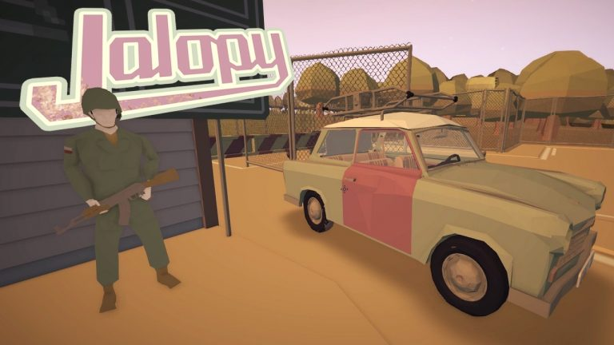
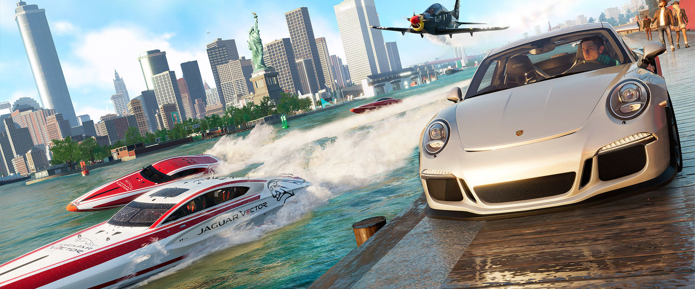
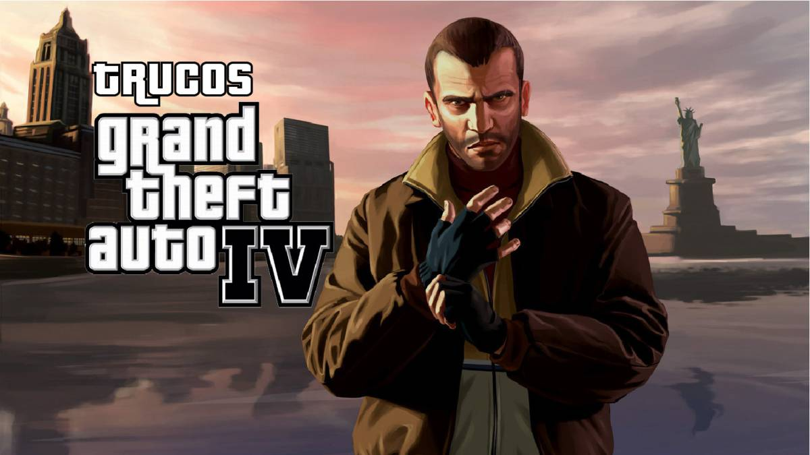
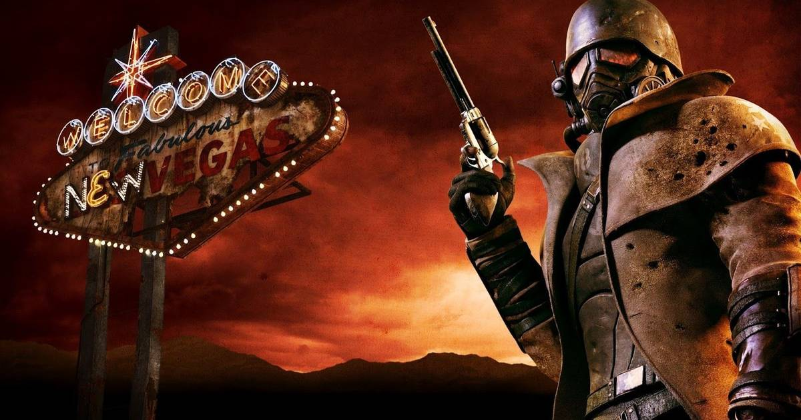
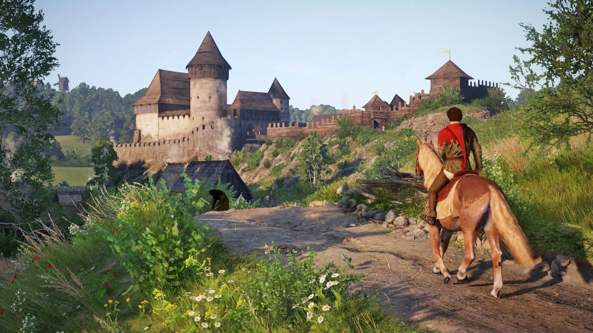
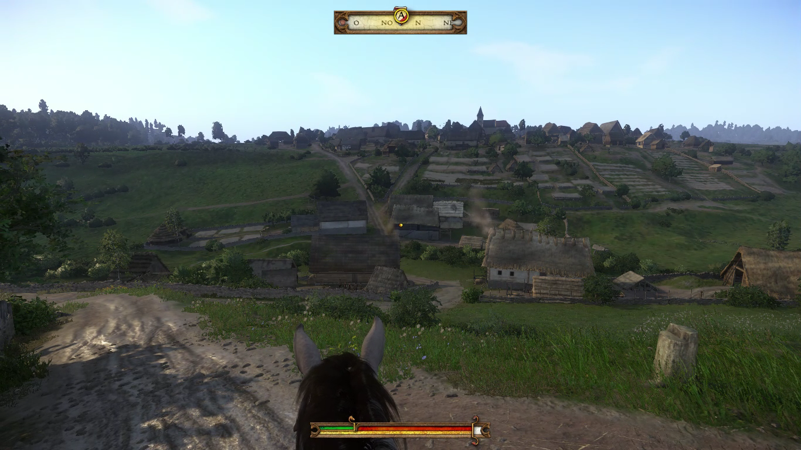

Viajar sin salir de casa: Juegos para la cuarentena
Tras haber estado poco mas de un mes en distanciamiento social y con el tiempo que aun resta con dicha medida, las opciones de entretenimiento parecen agotarse. Un pasatiempo popular entre jóvenes universitarios suele ser el de los videojuegos, y si no es una de tus actividades preferidas, que mejor momento para iniciar y dedicar un pequeño rato libre a este mundo.
Es por eso que a continuacion se presenta una lista con juegos para pasar un buen rato en cuarentena visitando otros sitios por primera vez, o de nuevo
Jalopy
Cuida tu auto que él cuidara de ti, en este simulador de conducción tienes que manejar por las avenidas de lo que en su día fue Alemania del este dando mantenimiento a tu auto pues es tu único medio de llegar a tu destino
The Crew 2
Continuando un poco con los autos, aquí podrás conducir cualquier tipo de vehículo, desde aun auto o una moto hasta un avión todo en línea para poder interactuar con otros usuarios y en un mapa que reproduce a Estados Unidos pudiendo visitar una replica en pequeño de sus ciudades y paisajes
Grand Theft Auto IV y V
Una de las series de juegos mas famosas donde puedes hacer prácticamente cualquier cosa mientras visitas en GTA IV una replica de New York (en el juego llamada Liberty City) y en GTA V recorrerás las calles de Los Ángeles (en el jurgo Los Santos)
Fallout 3 y Fallout New Vegas
Si lo que quieres es explorar todo lo que ofrece el mapa y visitar cada rincón, puede que quieras probar estos juegos, este es un mundo postapocalíptico ambos juegos situados alrededor de 200 años después de una guerra, pero con elementos de los años 40’s, especialmente la música.
Buena música y las ruinas de Washington D.C te esperan en Fallout 3, mientras Country y Las Vegas en Fallout NV
Kingdom Come: Deliverance
Y si no quieres un mundo postapocalíptico, sino todo lo contrario te recomiendo KC:D situado en la Bohemia de 1403 (parte de lo que hoy es la Republica Checa). Esto es lo más cercano a viajar en el tiempo, pues este juego cuenta con precisión histórica, basado enteramente en hechos históricos documentados, con una jugabilidad realista (hasta puedes aprender a leer, que no era común en la época), un mundo medieval sin fantasía muy bellos paisajes y ver como pasas de ser el hijo de un herrero a todo un caballeo, además que puedes aprender un poco de historia aquí, que no viene mal
